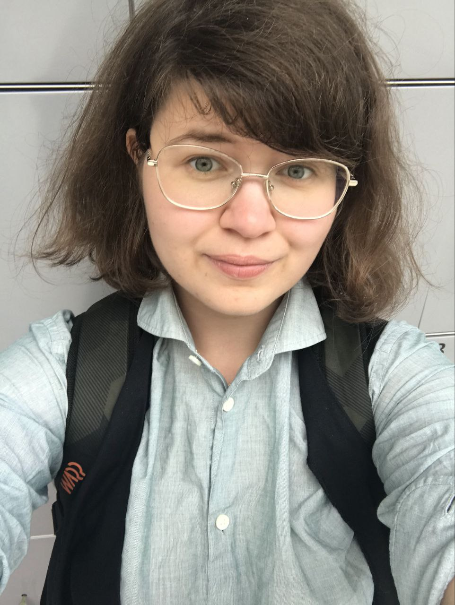

Nimi: Johanna Vastamäki
Sähköposti: johanna.vastamaki@myy.haaga-helia.fi
Puhelin: 050-*puhelinnumero*
R●○○○○
Java●●●○○
Python●●●○○
HTML●●○○○
CSS●●○○○
Javascript●●●○○
Suomi●●●●●
Englanti●●●●○
Ruotsi●○○○○
Kommunikaatio●●●●●
Ryhmätyötaidot●●●●●
Haaga-Helia 2025-
Helsingin Yliopisto 2016-2020